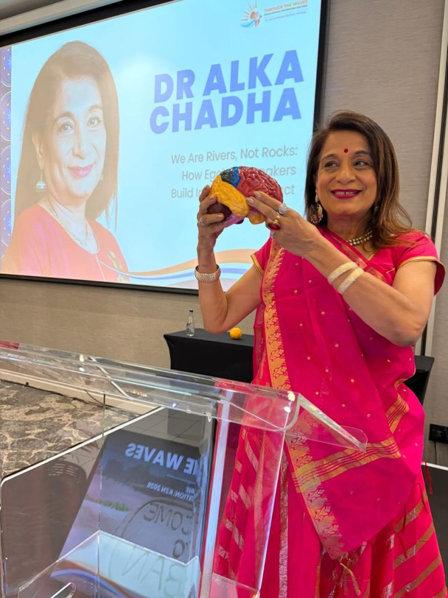

The Psychosomatic Mind-Body Foundation
Why standard motivational lectures evaporate after two days. Dr. Alka Chadha bridges inspirational stagecraft with three decades of medical observation, revealing how human biology governs executive leadership.
Your Issues Get into Your Tissues: The Somatic Cost of Leadership
The body keeps an accurate ledger that the rational mind tries to ignore.
When executives operate under relentless deadline pressure, unresolved interpersonal friction, or unspoken anxiety, the brain's limbic system perceives an ongoing existential threat. The hypothalamic-pituitary-adrenal (HPA) axis maintains elevated cortisol and adrenaline levels.
Over months, this constant biochemical bath downregulates immune response, stiffens connective tissue, alters microbiome diversity, and impairs prefrontal cortex executive functions such as nuance, compassion, and long-range foresight. Dr. Alka teaches corporate audiences how to recognize early somatic symptoms before they turn into clinical pathology.

The Physiology of Egoless Authority: Rivers vs. Rocks
Why aggressive dominance triggers neural threat responses in teams.
Neuroimaging reveals that when leaders speak from egoic defense, listeners' amygdalas light up, shifting their brains into defensive fight-or-flight postures. Collaboration plummets because cognitive energy is diverted toward self-preservation.
Conversely, when a speaker or corporate leader embodies emotional fluidity (the "River" mindset), their parasympathetic tone and heart rate variability (HRV) radiate somatic safety. Mirror neurons in the room entrain with this calm, unlocking psychological safety, deep creativity, and organizational trust.

Care About Your Brain
Cognitive Health Principles for High-Performance Leaders & Executives.
As part of her corporate workshops, Dr. Alka shares practical essays and clinical monographs on neuro-nutrition, vagal nerve stimulation, and parasympathetic recovery protocols.
These educational guidelines help conference delegates sustain peak cognitive endurance during grueling multi-day summits and executive decision cycles.

The Distinction Between Speaking & Clinical Practice
Dr. Alka Chadha is a qualified medical practitioner with more than thirty years of clinical foundation as the founder of Hope & Care Centre in Navi Mumbai.
However, this portal and Dr. Alka Chadha's public keynote addresses, workshops, books, and corporate seminars are educational and motivational in nature. They do not constitute personalized medical diagnoses, clinical therapy, or individual medical consultations. Delegates seeking treatment for specific clinical conditions are advised to consult their personal healthcare providers.